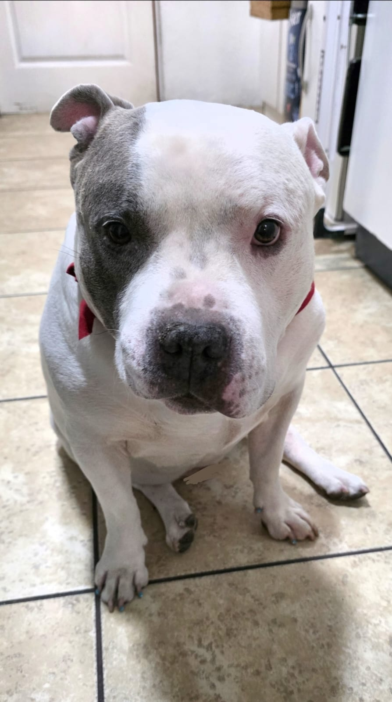

Reacción Negativa
Intentas acariciar a la criatura, pero ella gruñe y se aleja.
Sus ojos dorados se vuelven rojizos por un momento.
"Tal vez debí alimentarla primero..." piensas.
La criatura se ve agitada e incómoda. Este no fue un buen comienzo.